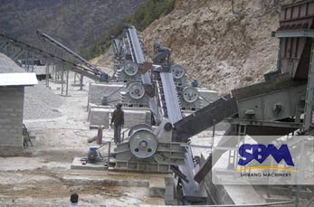

Application
As a leading global manufacturer of crushing and milling equipment, we offer advanced, rational solutions for any size-reduction requirements, including quarry, aggregate, grinding production and complete stone crushing plant. We also supply individual crushers and mills as well as spare parts of them.
-

Setting Up Stone Crusher Plant for Sale
Inquiry service on-line > Setting Up Stone Crusher Plant for Sale Stone Crusher Plant Stone crusher plant includes vibrating feeder, jaw crusher, impact crusher, vibrating screen, belt conveyor and centrally electric controlling system, etc. The designed capacity is from…
-

Small Gravel Crushing Unit for Sale
Inquiry service on-line > Small Gravel Crushing Unit for Sale Gravel Crushing Unit River gravel(stone) as the main raw material of sand and gravel plant, aggregate plant and the construction sand. Currently, with the rapid development of construction industry,…
-

Stone Crushing Unit for sale
Inquiry service on-line > Stone Crushing Unit for sale Stone Crusher Stone crushers machine are utilised to break down stones. They have applications in a number of different industries, like mining. Stone crusher are primarily made use of in…
-
Crushing Machine in Italy for Sale
Inquiry service on-line > Crushing Machine in Italy for Sale Italy Resource Introduction Italy is poor in natural resources, much of the land being unsuitable for agriculture due to mountainous terrain or unfavorable climate. Italy, moreover, is seriously deficient…
-
Iron Ore Crusher For Sale in India
Inquiry service on-line > Iron Ore Crusher For Sale in India Choose the Right Crusher Jaw Crusher Jaw crusher is used for coarse, medium and fine crushing towards different stones and ores with compression strength between 147～245MPa. It is…
-
Limestone Crusher For Sale
Inquiry service on-line > Limestone Crusher For Sale Limestone Quarrying Limestone is a sedimentary rock composed primarily of calcium carbonate with the occasional presence of magnesium. Also it is a construction stone that is quarried from large pits excavated…
-
Coal Crusher For Sale in Pakistan
Inquiry service on-line > Coal Crusher For Sale in Pakistan Pakistan Coal Coal plays an important role in modern industry. The coal is processed and crushed to increase the efficiency and protect environment. In order to use coal more…
-
Coal Crushing Unit For Sale in Pakistan
Inquiry service on-line > Coal Crushing Unit For Sale in Pakistan Coal Crusher This coal crusher is a single stage, two roll crusher installed in a power plant. It was selected to replace a large hammer mill crusher that…
-
Cone Crusher For Sale in Argentina
Inquiry service on-line > Cone Crusher For Sale in Argentina Cone Crusher Supplier SBM is a global company with products sold to more than 70 countries in the world. SBM mining euipments would satisfy you with high quality and…
Contact SBM
You can contact our head-office directly
 +86-21-58386189 58386176
+86-21-58386189 58386176 +86-21-58385681
+86-21-58385681